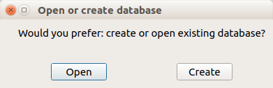

Research requires remembering many facts and details with credible references. It is easy to forget a specifc piece of information after a few days or months, or forget where we read it. Scientists usually mark PDF files or write down important details in a text documents. These files can quickly pile up and make it tedious to find specific pieces of information.
A traditional method for gathering all the necessary information is using paper note cards. In a note card, we write specific information along with references it. We then organize the note cards and use them for writing papers or books. This method has a few drawbacks, namely, it will be difficult to keep all the cards organized as we add cards, and it will become more difficult to find a specific card quickly. Therefore, people usually write new cards for each new project. This is inefficient.
Introducing GraphNotes, I offer a solution this problem. This is a software for organizing and easily retrieving key scientific concepts. As you read textbooks or journal articles, you come across critical concepts that will be likely useful in the future. You can store them in GraphNotes and find them quickly whenever you need them. GraphNotes uses a graph to store concepts. Each concept comprises a node in a graph. If there is a relation between two concepts, it will be an link between the concepts. Each node or link can store as many descriptions and references as necessary. When you need to retrieve a specific information, you can search within nodes, or references or links, and quickly find what you were looking for.
If it is the first time that you open GraphNotes, it will ask you for a location to store its database file. The database file stores all the information you enter into the program, so keep it in a safe location (I recommend your Dropbox or other cloud storages folder). You can back it up and open it on other computers.
All the steps above can be repeated, i.e. a concept can have multiple descriptions and relations.